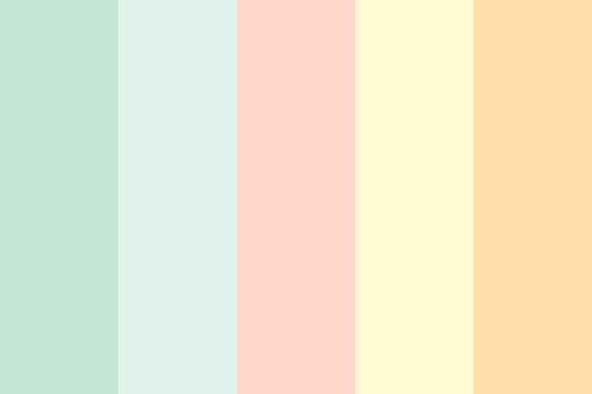

El color es un elemento fundamental en la decoración de interiores, ya que influye en la percepción del espacio, la iluminación y la atmósfera de una habitación. Los colores pueden hacer que un espacio se vea más grande o más pequeño, más cálido o más frío, y pueden incluso afectar el estado de ánimo de quienes lo habitan.
Impacto del color en la percepción del espacio:
Colores claros:
Crean una sensación de amplitud y luminosidad, ideales para espacios pequeños o con poca luz natural.
Colores oscuros:
Hacen que los espacios parezcan más pequeños y acogedores, pero en exceso pueden resultar opresivos. Son más adecuados para habitaciones grandes o para crear ambientes más íntimos.
Colores cálidos:
(rojos, naranjas, amarillos) Aportan calidez y energía, creando ambientes acogedores y estimulantes. Son ideales para habitaciones orientadas al norte o con poca luz natural.
Colores fríos:
(azules, verdes, morados) Transmiten frescura, tranquilidad y serenidad. Son adecuados para habitaciones orientadas al sur o con mucha luz natural, o para espacios donde se busca relajación.
Colores pastel:
Transmiten suavidad, armonía y serenidad, perfectos para dormitorios infantiles o espacios de relajación.
Colores vibrantes:
Añaden energía y vitalidad, pero deben usarse con moderación para evitar sobrecargar visualmente el espacio.
Colores neutros:
(blancos, grises, beiges) Son versátiles y permiten crear ambientes elegantes y atemporales. Pueden combinarse con colores más vibrantes para crear contrastes y puntos focales.
Psicología del color:
Además de los efectos visuales, los colores también tienen asociaciones psicológicas que pueden influir en el estado de ánimo y las emociones.
Por ejemplo:
Azul: Tranquilidad, calma, productividad.
Rojo: Energía, pasión, emoción, pero también puede ser agresivo.
Amarillo: Alegría, optimismo, energía.
Verde: Serenidad, naturaleza, frescura, equilibrio.
Morado: Lujo, creatividad, espiritualidad, pero también puede ser asociado con la tristeza.